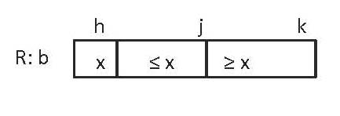

Program correctness
We introduce you to the basic concepts and terminology used in proving programs correct. This material deals with assertions in a program and how one can "prove" that they are true at the place where they appear. We don't generally formally prove programs correct, but fully understanding this material will increase your understanding of programming. Further, we will use this material later to introduce a way to understand and develop loops, so we can efficiently and effectively discuss searching and sorting algorithms and even such algorithms as finding a shortest path in a graph (what googlemaps does to find an auto route from one place to another).
There are five videos, which take about 20 minutes to watch (read their text versions, if you want). Here is a problem set up might want to do (if not required in your course): homework pdf file.
[Note: when you click an icon below, a fancy box will open in front of this page, with a red arrow in the middle; click the red arrow to start the youtube video. To change the size of the window, e.g. make it bigger, drag THIS window, not the fancy box. Click the X in the upper right to close the fancy box.]
About ranges m..n
 The notation m..n, where m and n are integers, denotes the list of values (m, m+1, ..., n). For example, 5..7 denotes the list (5, 6, 7). Click the icon to the left to learn about an important restriction on the notation and to learn a formula for the number of values in m..n. (3.4 minutes) Read it here: ranges.pdf
The notation m..n, where m and n are integers, denotes the list of values (m, m+1, ..., n). For example, 5..7 denotes the list (5, 6, 7). Click the icon to the left to learn about an important restriction on the notation and to learn a formula for the number of values in m..n. (3.4 minutes) Read it here: ranges.pdf
General concept of an assertion
An assertion is just a true-false statement about the variables in a program that is placed at a particular point in that program, generally as an aid to the reader. Click the icon to the left to learn about preconditions, postconditions, the Hoare-triple, and, finally, preconditions of methods. (5 minutes) Read it here: assertions.pdf
A notation for assertions about arrays
Many algorithms manipute arrays. For example, algorithms for searching an array and for sorting an array. It helps to have a picture notation for assertions that deal with arrays. Click the icon to the left to learn about this notation and to learn about pitfalls to watch out for. (2.4 minutes) Read it here: arrayNotation.pdf
Sometimes, you may want to include an array diagram, like the one on the right, in a Java program or word document or other kind of file, but you have difficulty drawing the diagram. Don't worry about that! Just use an equivalent assertion written in a mixture of math notation and English. The diagram on the right is equivalent to the following:
b[h] = x and
b[h+1..j] <= x and (meaning every element of b[h+1..j] is at most x)
b[j+1..k] >= x
Some people prefer to work with array diagrams. Others prefer the math notation. Practice going back and forth between them.
Assignment to simple variables
We show you how easy it is to see that an assignment to a simple variable does its job. It really is surprising. We don't deal with assignment to such things as array elements here —like b[i]= 5;— because that requires more technical knowhow and we don't want to spend the time on it. We will continue to deal with these in an informal way. (5.29 minutes) Read it here: assignment.pdf
Defining parts of a language using Hoare triple: if-else, sequencing, implication
We show in detail how Sir Tony Hoare used Hoare triples to "define" parts of a language —not in terms of how programs are executed but in terms of how one proves them correct. For example, here we show what has to be done to prove {Q} if (B) S1 else S2 {R}. Actually, based on a flow chart for that if-else statement with assertions on the edges, you will see that it is really common sense. (4 minutes) Read it here: hoare-triples.pdf